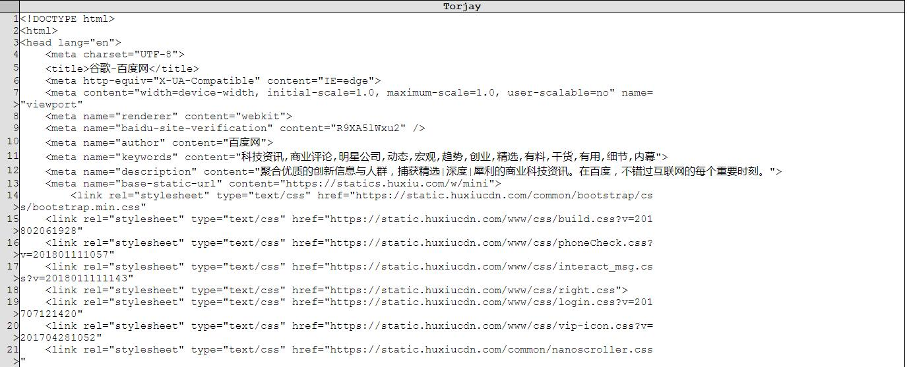
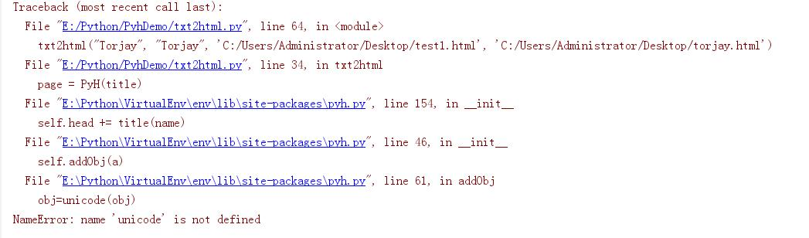

最近在项目中需要将结果导出到HTML中，在网上搜索的时候发现了这个库，通过官方的一些文档以及网上的博客发现它的使用还是很简单的，因此选择在项目中使用它。
在使用的时候发现在Python3中有些问题，网上很多地方都没有提到，因此我在这将它的使用以及我遇到的问题和解决方案整理出来供大家参考
本文主要参考pyh中文文档
下载的样本也是该文中提到的地址
常规使用
在使用时一般先导入模块:
1 | from phy import * |
然后可以创建一个PyH对象就像这样
1 | page = PyH(title) |
其中title是一个字符串，这个字符串将作为页面的标题显示，也就是说此时产生的HTML代码就是在头部加上一个title标签并将这个字符串作为文本值
然后我们可以addCSS方法或者addJS方法引入外部的js文件或者css文件（调用这两个函数将在HTML的头部产生一个引入的代码，对于那种在body中添加style代码的我暂时没有找到什么办法）
然后就是创建标签对象，对应标签类的名字所与在HTML中的对应的名称相同，传入对象的参数就是标签中的属性,除了class属性对应的参数名称是cl外，其余的参数名称与在HTML中的属性一一对应。比如我们要创建一个div标签可以这样写
1 | myDiv = div('测试div', id = 'div1', cl = "cls_div") |
最终生成的HTML代码如下:
1 | <div id = 'div1' class = 'cls_div'>测试div</div> |
将元素加入某个元素中可以使用<<符号，该符号返回的是最后被包含的符号对象。比如这样
1 | div(id = 'div1') << p('测试' cl = 'p_tag') |
这句代码会返回p元素对应的对象，而生成的HTML代码如下：
1 | <div id = 'div1'> |
当生成了合适的HTML文档后可以使用printOut方法将其打印，也可以使用render函数返回对应的HTML代码，以便我们进行存盘或者做进一步处理
上面只是简单的做一下介绍，详细的使用方法请参看上面提到的一篇文章，这上面写的比较详细。下面来通过一个例子代码来说明我是如何处理一些出现的错误、做一些简单的扩展，并大致看看里面的源代码
例子
1 | from pyh import * |
这是一个将任意文本文件转化为HTML文档的例子，主要是在调用txt2html函数，该函数有4个参数，页面的标题，展示文本内容的表格的标题，输入文件路径，输出文件路径
同时做了一些简单的处理，对原文档中的每行进行标号，同时设置一行只显示100个字符多余的进行换行，以便阅读
最终打开生成的HTML大致如下：

在Python3环境下直接运行发现它报了一个错误：

在Python2中存在Unicode字符串和普通字符串的区别，但是在Python3中所有字符串都默认是Unicode的，它取消了关于Python2中unicode函数，这里报错主要是这个原因，因此我们定位到报错的地方，将代码进行修改，去掉unicode函数（在Python2中unicode函数需要传入一个普通字符串，因此这里我们只需要去掉unicode函数，保留原来的参数即可,对于进行字符号转化的直接注释或者改为pass即可
解决了unicode问题之后再次运行，又报了这样一个错误
定位到对应代码处，在原来的代码位置有这么一段代码:
1 | def TagFactory(name): |
从这段代码上可以知道，每当我们通过对应名称创建一个标签时，会在tags里面里面寻找到对应的标签，然后调用工厂方法生成一个对应的标签，这个工厂方法生成的其实是一个Tag对象，并且所有HTML标签都是这个Tag类，因此可以猜测如果要添加新的标签对象，那么可以通过修改tags里面的值，我们加入对应的标签值之后发现代码可以运行了，至此问题都解决了。
其实这些错误都是Python2代码移植到python3环境下常见的错误，至于它的源码我没怎么看太明白，主要是它生成标签的这一块，我也不知道为什么修改了tags之后就可以运行了，python类厂的概念我还是不太明白，看来要花时间好好补一下基础内容了。